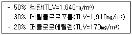
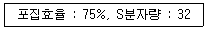
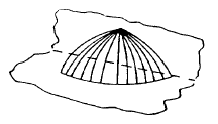

산업위생관리산업기사 (2003-03-16 기출문제)
1과목: 산업위생학 개론
1. 교대제에 관한 설명으로 알맞지 않은 것은?
- 야근의 주기를 4~5일로 한다.
- 야근 후 다음 반으로 가는 간격은 최소 72시간을 가지도록 하여야 한다.
- 2교대면 최저 3조로 3교대면 4조로 편성한다.
- 근로자의 체중이 3Kg이상 감소하면 정밀검사를 받아야 한다.
(정답률: 알수없음)

2. 다음 중 가장 많은 열량을 발생하는 영양소는?
- 단백질
- 탄수화물
- 지방
- 염분
(정답률: 75%)
3. 미국국립산업안전보건연구원(NIOSH)에서는 중량물 취급작업에 대하여 감시기준(AL)과 최대허용기준(MPL)의 두가지 권고치를 설정하였다. 감시기준(AL)이 20㎏일 때 최대허용기준(MPL)은?
- 40㎏
- 50㎏
- 60㎏
- 80㎏
(정답률: 88%)
4. 1775년 영국의 외과의사인 Percivall Pott에 의해 최초로 보고된 음낭 암의 원인물질은?
- 벤젠
- 검댕
- 면
- 납
(정답률: 90%)
5. methanol의 경우 1일 8시간 작업기준 허용농도가 200ppm이다. 1일 10시간 작업할 때 Brief 와 Scala 의 보정방법으로 허용농도를 보정하면 얼마가 되는가?
- 100ppm
- 120ppm
- 140ppm
- 160ppm
(정답률: 84%)
6. 어떤 근로자에 약한 손(오른손잡이인 경우 왼손)의 힘이 약 50kp(kilopond) 정도이다. 이 근로자가 무게 15kg인 상자를 두 팔로 들어올릴 경우 작업강도(%MS)는?
- 10%
- 15%
- 20%
- 25%
(정답률: 80%)
7. 근육노동에 있어서 특히 보급해야할 비타민은?
- 비타민 A
- 비타민 B1
- 비타민 B6
- 비타민 C
(정답률: 93%)
8. 작업강도와 작업대사율을 잘못 연결한 것은?
- 경작업 : 0∼1
- 중등작업 : 1∼2
- 중(重)작업 : 2∼4
- 격심한 작업 : 7이상
(정답률: 86%)
9. 피로한 근육에서 측정되는 근전도(EMG)를 정상 근육에서 측정된 EMG와 비교하였을 때 나타나는 차이로 맞지 않는 것은?
- 저주파수(0∼40Hz) 힘의 증가
- 고주파수(40∼200Hz) 힘의 감소
- 평균주파수의 증가
- 총전압의 감소
(정답률: 43%)
10. 일반적인 피로의 증상으로서 틀린 것은?
- 맥박이 느려지고 회복시까지 시간이 걸린다.
- 맛, 냄새, 시각, 촉각등 지각기능이 둔해지고 반사기능이 낮아진다.
- 혈당치가 낮아지고 젖산과 탄산량이 증가한다.
- 체온이 높아지나 피로정도가 심해지면 도리어 낮아진다.
(정답률: 60%)
11. 어떤 근로자가 조혈장해, 재생불량성 빈혈, 백혈병등의 직업병 증세가 나타났다면 어떤 원인 유해물질을 취급했다고 추측할수 있겠는가?
- 산, 염기
- 석면
- 벤젠
- 황화수소
(정답률: 70%)
12. PWC가 16kcal/min인 근로자가 1일 8시간 동안 물체 운반 작업을 하고 있다. 이때의 작업대사량은 7kcal/min 이고, 휴식시의 대사량은 1.5 kcal/min 일 때 적절한 휴식시간과 작업시간의 배분은? (단, Trest = {(Emax – Etask) / (Erest – Etask)} × 100)
- 9분휴식, 51분 작업
- 14분 휴식, 46분 작업
- 18분 휴식, 42분 작업
- 22분 휴식, 38분 작업
(정답률: 75%)
13. 작업환경측정결과 측정을 5번 실시한 농도가 각각 51, 75, 40, 1⑤, 96ppm이었다. 기하평균은?
- 73.4 ppm
- 75.6 ppm
- 70.3 ppm
- 68.8 ppm
(정답률: 62%)
14. TLV 적용상의 주의사항으로 맞는 것은?
- 반드시 산업위생전문가에 의하여 적용되어야 한다.
- TLV는 안전농도와 위험농도를 정확히 구분하는 경계선이다.
- TLV는 독성의 강도를 비교할 수 있는 지표가 된다.
- 기존의 질병이나 육체적조건을 판단하기 위한 척도로 사용될 수 있다.
(정답률: 75%)
15. 앉을 때, 서있을 때, 물체를 들어올릴 때 및 뛸 때 발생하는 압력이 가장 많이 흡수되는 척추의 디스크는?
- L1/S5
- L2/S1
- L3/S2
- L5/S1
(정답률: 70%)
16. 한냉환경에서 국소진동에 노출되는 경우 나타나는 현상으로 수지의 감각마비등의 증상을 보이는 것은?
- Raynaud증상
- heat exhaustion증상
- 참호족(trench foot)증상
- heat stroke증상
(정답률: 67%)
17. 다음 중 광산에서의 환기, 마스크 착용 및 규폐증 등 광산에 관련된 유해성을 언급한 <광물에 대하여>라는 저술을 남긴 사람은?
- Philippus Paracelsus
- Georgius Agricola
- Percival Pott
- Bernardino Ramazzini
(정답률: 48%)
18. 어떤 사람의 육체적 작업능력(PWC)은 18kcal/min이다. 이때 하루 8시간 동안 작업할 수 있는 작업의 강도는?
- 4.5 kcal/min
- 5.0 kcal/min
- 6.0 kcal/min
- 9.0 kcal/min
(정답률: 알수없음)
19. 지금까지 밝혀진 산업피로의 본태와 관계가 가장 적은 것은?
- 체내에서의 물리화학적 변조
- 산소, 영양소 등 활동자원의 소모
- 여러 가지 신체 조절기능의 저하
- 체내에서의 ATP 축적
(정답률: 54%)
20. 작업에 소요된 열량이 4500kcal,안정시 열량이 1000kcal, 기초대사량이 1500kcal 일 때 실동률은? (단, 실동률 = 85 - 5 × RMR)
- 70.0%
- 73.4%
- 84.4%
- 85.0%
(정답률: 94%)
2과목: 작업환경측정 및 평가
21. 아래 측정방법 중 분진에 대한 측정 방법과 가장 거리가 먼 것은?
- 직독식(Digital)분진계법
- 중량 분석법
- 챠콜(charcoal)튜브(활성탄)법
- 임핀저(impinger)법
(정답률: 54%)
22. 표준형의 활성탄관의 경우 앞층과 뒷층에 들어 있는 활성탄의 양은?
- 앞층 : 50 mg, 뒷층 : 100 mg
- 앞층 : 100 mg, 뒷층 : 50 mg
- 앞층 : 200 mg, 뒷층 : 400 mg
- 앞층 : 400 mg, 뒷층 : 200 mg
(정답률: 73%)
23. 유기용제가 다음의 중량비로 혼합되어 공기중으로 휘발(증발)되었을 때 공기중 노출기준은?

- 3⑤㎎/m3
- 610㎎/m3
- 915㎎/m3
- 1,220㎎/m3
(정답률: 64%)
24. 흡광광도 측정에서 투과율 50%일 때 흡광도는?
- 0.1
- 0.2
- 0.3
- 0.4
(정답률: 82%)
25. 검지관 사용시 단점이라 볼 수 없는 것은?
- 밀폐공간에서 산소부족 또는 폭발성 가스 측정에는 측정자 안전이 문제된다.
- 민감도가 낮다.
- 특이도가 낮다.
- 대개 단시간 측정만 가능하다.
(정답률: 67%)
26. 어떤 물질에 대한 분석방법의 검출한계는 10μg이다. 0.1 mg/m3의 농도를 검출하기 위해서는 공기량을 얼마나 채취하여야 할까?
- 1 L
- 10 L
- 100 L
- 1000 L
(정답률: 63%)
27. 원자흡광분석장치의 구성으로 알맞은 것은?
- 광원부 - 시료원자화부 - 단색화부 - 측광부
- 광원부 - 단색화부 - 시료원자화부 - 측광부
- 광원부 - 파장선택부 - 시료원자화부 - 측광부
- 광원부 - 시료부 - 파장선택부 – 시료원자화부 -측광부
(정답률: 60%)
28. 옥외 작업장의 습구온도=25℃, 건구온도=33℃, 흑구온도=36℃, 기류속도=1m/s 일 때 WBGT 지수 값은?
- 22 ℃
- 24 ℃
- 28 ℃
- 32 ℃
(정답률: 93%)
29. 25℃, 1atm 에서 H2S를 함유한 공기 500ℓ 를 흡수액 20㎖에 통과시켰더니 액중의 H2S량은 20㎎이었다. 공기중 H2S의 농도는?

- 19.5ppm
- 24.4ppm
- 26.7ppm
- 38.3ppm
(정답률: 31%)
30. 아세톤 100ppm을 mg/m3 농도로 환산한 값으로 맞는 것은? (단, 아세톤의 분자량=58, 25℃, 1기압 기준 )
- 237
- 287
- 325
- 349
(정답률: 62%)
31. 공기역학적 입경에 따라 분진의 크기별로 분리포집하는 기기를 무엇이라 하는가?
- Cascade impactor
- Respirable dust sampler
- Nylon cyclone
- Personal Air Sampler
(정답률: 50%)
32. 발암물질이나 유리규산 등의 농도를 평가하고자 한다. 건강상의 영향을 고려할때 평가를 위한 노출기준으로 가장 적합한 것은?
- 천장값(TLV-Ceiling)
- 단시간노출허용기준(STEL)
- 시간가중평균치(TWA)
- 장기간평균(LTA)
(정답률: 24%)
33. 0.⑤%는 몇 ppm 인가?
- 50ppm
- 500ppm
- 5000ppm
- 50000ppm
(정답률: 77%)
34. 낮은 흡습성을 가지고 있고 견고하여 중량분석을 위한 분진 채취에 가장 적합한 여과지 종류는?
- 유리섬유여과지
- 셀룰로오스 에스테르(MCE) 막 여과지
- PVC 여과지
- 은막 여과지
(정답률: 43%)
35. 지름 1 inch 되는 촛불이 수평방향으로 비칠 때 빛의 광강도를 나타내는 단위는?
- Lux
- Candle
- Lumen
- Lambert
(정답률: 43%)
36. 작업장에서 공기중 오염물질을 포집하는 경우 개인 포집장치(Personal air sampler)가 고정 포집장치(fixedsampler)보다 우수한 경우는?
- 폭로농도 측정시
- 최고농도 측정시
- 배출원 측정시
- 최저농도 측정시
(정답률: 40%)
37. 개인에게 부착하여 개인의 소음노출량을 측정하는 소음측정기구 명칭은?
- noise dosimeter
- sound pressure level meter
- octave-band analyzer
- microphone
(정답률: 30%)
38. 반응 양상이 각각 달라 독립효과를 내는 유해물질이 납 0.09㎎/m3(TLV : 0.15㎎/m3)과 황산 0.9㎎/m3(TLV : 1.0㎎/m3)이 혼합되어있는 작업장의 농도는?
- 허용기준 초과
- 허용기준 초과 안함
- 허용기준과 동일
- 측정불가능
(정답률: 46%)
39. 관찰치의 변이계수의 정의는?
- 평균/표준편차
- 표준편차/평균
- 분산/평균
- 평균/분산
(정답률: 50%)
40. 작업환경 공기중에 아세톤(TLV : 750 ppm) 400ppm 브틸아세테이트(TLV : 200ppm) 150ppm, 메틸에틸케톤(TLV : 200ppm)100ppm 으로 오염되어있다면 혼합물의 허용농도는?
- 약 325ppm
- 약 335ppm
- 약 350ppm
- 약 365ppm
(정답률: 44%)
3과목: 작업환경관리
41. 인체내 조혈기관에 만성적 장해를 유발시키는 물질은?
- 트리클로로에틸렌(TCE)
- 케톤
- 벤젠
- 아세톤
(정답률: 64%)
42. 방독마스크의 흡수제의 재질로 적당하지 않은 것은?
- fiber glass
- silica gel
- activated carbon
- soda lime
(정답률: 67%)
43. 다음의 소음성 지향성 그림에서 지향계수 (directivityfactor)는?

- 1
- 2
- 4
- 8
(정답률: 69%)
44. 다음 중에서 전신진동의 인체 폭로에 대한 한계와 평가를 하는데 있어, ISO가 제시한 진동노출의 측정 주파수(Hz)범위로 가장 알맞는 것은?
- 1 - 80
- 25 - 140
- 100 - 500
- 300 - 1000
(정답률: 54%)
45. 일반적으로 방진마스크의 배기저항의 기준으로 가장 적절한 것은?
- 15㎜H2O 이하
- 13㎜H2O 이하
- 10㎜H2O 이하
- 6㎜H2O 이하
(정답률: 25%)
46. 다음 진폐증 중에서 가장 많이 발견되며 폐결핵 합병증세를 일으키는 것은?
- 석면폐증
- 규폐증
- 면폐증
- 농부폐증
(정답률: 67%)
47. 방진마스크의 선정기준 중에서 틀린 내용은?
- 포집효율이 높은 것이 좋다.
- 흡기저항은 큰 것이 좋다.
- 배기저항은 작은 것이 좋다.
- 중량은 가벼운 것이 좋다.
(정답률: 77%)
48. 다음 작업중 전신진동작업에 속하는 것은?
- 착암기 작업
- 연마 작업
- 기관차운전 작업
- 전기톱 작업
(정답률: 90%)
49. 유독가스에 관한 내용중 틀린 것은?
- 이산화질소는 종말기관지 및 폐포점막 자극제이다.
- 크롬산은 상기도 점막 자극제이다.
- 단순질식제로는 일산화탄소, 질소 등이 있다.
- 황화수소는 화학적 질식제이다.
(정답률: 28%)
50. 작업환경관리의 목적과 가장 거리가 먼 사항은?
- 산업재해 방지
- 근로자 의욕고취
- 직업병의 치료
- 작업능률 향상
(정답률: 55%)
51. 방열복이나 방열장갑에서 복사열을 반사하도록 하기 위해서 가장 많이 사용하는 물질로 안전한 것은?
- 석면
- 플라스틱
- 고무
- 알루미늄
(정답률: 30%)
52. 다음 중 가스상태에 있어서 비중이 가장 작은 물질은?
- 암모니아
- 포스겐
- 일산화탄소
- 황화수소
(정답률: 77%)
53. 작업환경 개선의 기본원칙으로 볼 수 없는 것은?
- 환기
- 평가
- 격리
- 대치
(정답률: 65%)
54. 감압병(decompression sickness)예방을 위한 환경 관리 및 보건관리 대책으로 바르지 못한 것은?
- 질소가스 대신 헬륨가스를 흡입시켜 작업하게 한다.
- 감압을 가능한 한 짧은 시간에 시행한다.
- 비만자의 작업을 금지시킨다.
- 감압이 완료되면 산소를 흡입시킨다.
(정답률: 67%)
55. 방사능 물질에 가장 예민한 신체부위는?
- 간
- 신장
- 임파선
- 골격
(정답률: 72%)
56. 진동으로 인한 건강장해를 방지하기 위한 대책중 적당치 못한 것은 ?
- 진동공구의 질량을 가능한한 크게하여 흔들림을 최대한 방지한다.
- 진동공구는 가능한한 공구를 기계적으로 지지하여준다.
- 공구의 손잡이를 너무 세게 잡지 않는다.
- 진동공구의 사용시에 장갑을 착용한다.
(정답률: 50%)
57. 자외선은 살균작용,각막염,피부암 및 비타민D 합성에 밀접한 관계가 있다. 이 자외선의 가장 대표적인 광선은 Dorno - Ray라 하는데 이 광선의 파장은?
- 290 ∼ 315Å
- 2800 ∼ 3150Å
- 390 ∼ 515Å
- 3900 ∼ 5700Å
(정답률: 50%)
58. 다음중 분진 및 분진장해에 대한 설명으로 틀린 것은?
- 5㎛이하의 미세한 분진은 폐내에 침착될 가능성이 크며 오랜시일에 걸쳐 섬유증식 또는 결절형성 등의 증상을 나타낸다
- 털, 나무가루등의 유기분진은 알레르기성 천식을 유발시킬수 있다.
- 석탄, 시멘트와 같이 많은양의 분진을 흡입하지 않아도 유해작용이 큰것을 불활성 분진이라 한다.
- 석면, 카르보닐니켈은 발암성분진이다.
(정답률: 54%)
59. 다음 중 전리 방사선에 속하는 것은?
- 가시광선
- X선
- 적외선
- 마이크로파
(정답률: 알수없음)
60. 청력보호구의 차음효과를 높이기 위한 유의사항으로 틀린 것은?
- 사용자의 머리와 귓구멍에 잘 맞아야 할 것
- 흡음율을 높이기 위해 기공(氣孔)이 많은 재료를 선택할 것
- 청력보호구를 잘 고정시켜서 보호구 자체의 진동을 최소화 할 것
- 귀덮개 형식의 보호구는 머리카락이 길 때, 사용하지 말도록 할 것
(정답률: 94%)
4과목: 산업환기
61. 원형이나 정사각형의 후드인 경우 필요 환기량은 Dalla Valle 공식(Q=V(10x2+A))을 활용한다. 이 공식은 오염원에서 후드까지의 거리가 닥트직경의 몇 배 이내일 때만 유효한가?
- 1배
- 1.5배
- 2배
- 2.5배
(정답률: 57%)
62. 일반적으로 외부식 후드에 프랜지를 부착하면 약 어느정도의 효율(필요송풍량 감소)이 증가되는가? (단, 프랜지의 폭은 √A 이상임)
- 15%
- 25%
- 35%
- 45%
(정답률: 77%)
63. 발생원으로부터 송풍기까지의 전압력 손실이 130mmAq이고, 처리가스량이 52,000m3/hr라면 여유율과 송풍기 효율을 고려한 송풍기의 동력은? (단, 여유율=1.2, 송풍기 효율=0.6)
- 30.5 kW
- 36.8 kW
- 42.5 kW
- 45.8 kW
(정답률: 50%)
64. 국소환기장치를 설계할때 가장 먼저 선정해야 할 것은?
- 후드의 형식 선정
- 송풍기의 선정
- 배기관의 설치장소 선정
- 제어속도의 결정
(정답률: 67%)
65. 미세한 백금 또는 텅스텐의 금속선이 공기와 접촉하여 금속의 온도가 변하고 이에 따라 전기저항이 변하여 유속을 측정하는 풍속계는?
- 그네 날개형 풍속계
- 회전 날개형 풍속계
- 마노미터
- 열선풍속계
(정답률: 54%)
66. 후드를 추가로 설치해도 쉽게 압력 조절이 가능하고, 사용하지 않는 후드를 막아 다른곳에 필요한 정압을 보낼 수 있어 현장에서 편리하게 사용할 수 있는 압력 균형 방법은?
- 회전수 변화법
- 안내익 조절법
- 압력조절법
- 댐퍼법
(정답률: 59%)
67. 정유공장의 비상구조설비(emergency relief system)로부터 비정상적으로 발생되는 고농도의 VOC를 처리하는 데 적합한 처리방법은?
- 소각로
- 불꽃 연소법
- 직접가열 산화법
- 촉매 산화법
(정답률: 알수없음)
68. 기류의 이동이 거의 없는 액면에서 발생하는 가스나 증기, 흄의 제어속도는?
- 0.25 ~ 0.5 m/sec
- 0.5 ~ 1.0 m/sec
- 1.0 ~ 2.5 m/sec
- 2.5 ~ 3.5 m/sec
(정답률: 50%)
69. 다음 중 동압을 측정할 수 있는 기기는?
- 풍차풍속계
- 피토튜브와 마노미터
- 열선풍속계
- 기압계
(정답률: 58%)
70. 직경이 180㎜인 덕트 내 정압은 -58.5㎜H2O, 전압은 23.5㎜H2O이다. 이때 공기유량은?
- 약 0.76m3/s
- 약 0.93m3/s
- 약 1.15m3/s
- 약 1.35m3/s
(정답률: 40%)
71. 송풍기 법칙중 올바른 것은? (단, 회전수=N, 풍량=Q, 풍압=P, 동력=L)
- Q2 ∝ N
- L ∝ N4
- P ∝ N2
- L ∝ N2
(정답률: 47%)
72. 작업장내에 설치된 직사각형 닥트의 길이는 20m이고 가로는 0.32m이며, 세로는 0.21m이고, 속도압은 10mmH2O 이다. 이러한 닥트의 마찰계수가 0.0⑤이라면 압력손실은?
- 1.1 mmH2O
- 2.5 mmH2O
- 3.0 mmH2O
- 3.9 mmH2O
(정답률: 39%)
73. 국소배기 시스템에 설치된 충만실(plenum chamber)은 어떠한 효율을 높이는데 가장 적합한가?
- 정압효율
- 배기효율
- 정화효율
- 집진효율
(정답률: 54%)
74. 다음 중 기류의 속도를 잴 수 있는 기기와 거리가 먼 것은?
- 연기 발생기(smoke tube)
- 열선풍속계
- 타코미터
- 풍향풍속계
(정답률: 50%)
75. 용접할 때 발생되는 흄을 포집제거하기 위한 외부식 후드 설계시, 필요 송풍량을 가장 많이 줄일 수 있는 경우는?
- 플렌지가 없고 면에 고정된 후드
- 플렌지가 없고 적절한 공간이 있는 후드
- 플렌지가 있고 면에 고정된 후드
- 플렌지가 있고 적절한 공간이 있는 후드
(정답률: 64%)
76. 슬로트후드(slot hood)에 관한 설명이다. 바르지 못한 것은?
- 후드의 가장자리에서도 공기의 흐름을 균일하게 하기위해 사용한다.
- 슬로트후드에서도 플랜지를 부착하면 필요배기량을 줄일 수 있다.
- 슬로트속도가 감소하면 포착속도도 등비적으로 감소한다.
- 슬로트후드는 개구면의 폭과 길이의 비율이 0.2이하인 것을 말한다.
(정답률: 34%)
77. 사염화에틸렌 20,000ppm이 공기 중에 존재한다면 공기와 사염화에틸렌 혼합물의 유효비중은? (단, 공기비중: 1.0, 사염화에틸렌 증기 비중: 5.7 )
- 1.021
- 1.043
- 1.094
- 1.126
(정답률: 53%)
78. 1기압에서 직경 20㎝인 덕트의 동점성계수 2 × 10-4m2/sec인 기체가 5m/sec로 흐를 때 레이놀즈 수는?
- 3000
- 5000
- 8000
- 10000
(정답률: 62%)
79. 덕트내의 압력에 대한 설명 중 바르지 못한 것은?
- 정압이 대기압 보다 낮으면 마이너스 압력이다.
- 속도압은 마이너스일 수 있다.
- 속도압은 송풍량과 닥트 직경이 일정하면 일정하다.
- 정압과 속도압의 합을 전압이라 한다.
(정답률: 91%)
80. 중력집진장치(重力集塵裝置)의 집진원리는 Stokes의 법칙에 의거 분진의 자연침강을 이용하고 있다. 이때의 분리 속도에 대한 다음 기술 중 옳지 않은 것은?
- 분리속도는 분진의 밀도가 클수록 커진다.
- 분리속도는 공기의 밀도가 클수록 작아진다.
- 분리속도는 분진의 직경이 클수록 작아진다.
- 분리속도가 클수록 집진율이 높아진다.
(정답률: 36%)
"야근 후 다음 반으로 가는 간격은 최소 72시간을 가지도록 하여야 한다."는 근로자의 휴식을 보장하기 위한 조치이다. 야근을 하게 되면 근로자의 체력이 소모되므로 충분한 휴식을 취할 수 있도록 72시간 이상의 간격을 두어야 한다.